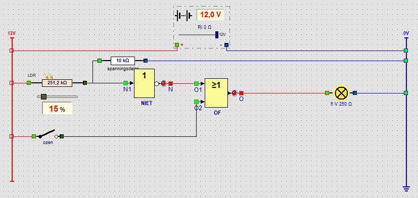

Leerpad › Les 6 van 42 · Niveau: Basis

Een tuinlamp moet vanzelf aangaan als het donker wordt. Daarnaast wil je ze ook met de hand kunnen aanzetten, bijvoorbeeld voor een feestje overdag.
| Licht | Schakelaar | NIET licht | Tuinlamp |
|---|---|---|---|
| 0 | 0 | 1 | 1 |
| 0 | 1 | 1 | 1 |
| 1 | 0 | 0 | 0 |
| 1 | 1 | 0 | 1 |
Start de simulatie. Sleep de schuifregelaar van de LDR om het licht en donker te maken, en zet de schakelaar aan en uit. Vergelijk met de tabel.
De buren klagen: de lamp brandt de hele nacht. Ze mag alleen aangaan als het donker is en er iemand in de tuin is (een drukknop stelt de bewegingsmelder voor). Pas de schakeling aan.
Vervang de OF-poort door een EN-poort en de schakelaar door een drukknop. De lamp brandt nu alleen als het donker is (NIET licht) en de bewegingsmelder iets ziet.